AMIGO_ContourP -- plot contours of the cost function
Contents
plots contours of the Maximum Likelihood function by pairs of unknowns, this may help to detect lack of practical identifiability, presence of suboptimal solutions.
See also
Example
clear; %============================ % RESULTS PATHS RELATED DATA %============================ inputs.pathd.results_folder='test'; inputs.pathd.short_name='test10'; inputs.pathd.runident=''; %============================ % MODEL RELATED DATA %============================ inputs.model.input_model_type='charmodelC'; inputs.model.n_st=5; inputs.model.n_par=5; inputs.model.n_stimulus=0; inputs.model.names_type='custom'; inputs.model.st_names=char('y1','y2','y3','y4','y5'); inputs.model.par_names=char('p1','p2','p3','p4','p5'); inputs.model.stimulus_names=[]; inputs.model.eqns=... char('dy1=-(p1+p2)*y1',... 'dy2= p1*y1',... 'dy3= p2*y1-(p3+p4)*y3+p5*y5',... 'dy4= p3*y3',... 'dy5= p4*y3-p5*y5'); p1=5.93e-5; p2=2.96e-5; p3=2.05e-5; p4=27.5e-5; p5=4e-5; inputs.model.par=[p1 p2 p3 p4 p5]; %================================== % EXPERIMENTAL SCHEME RELATED DATA %================================== inputs.exps.n_exp=1; inputs.exps.n_obs{1}=5; inputs.exps.obs_names{1}=char('obsy1','obsy2','obsy3','obsy4','obsy5'); inputs.exps.obs{1}=char('obsy1=y1','obsy2=y2','obsy3=y3','obsy4=y4','obsy5=y5'); inputs.exps.exp_y0{1}=[100 0 0 0 0]; inputs.exps.t_f{1}=36420; inputs.exps.n_s{1}=9; inputs.exps.t_s{1}=[0 1230 3060 4920 7800 10680 15030 22620 36420]; %================================== % EXPERIMENTAL DATA RELATED INFO %================================== inputs.exps.data_type='real'; inputs.exps.exp_data{1}=[ 100.0 0.0 0.0 0.0 0.0 88.35 7.3 2.3 0.4 1.75 76.4 15.6 4.5 0.7 2.8 65.1 23.1 5.3 1.1 5.8 50.4 32.9 6.0 1.5 9.3 37.5 42.7 6.0 1.9 12.0 25.9 49.1 5.9 2.2 17.0 14.0 57.4 5.1 2.6 21.0 4.5 63.1 3.8 2.9 25.7 ]; inputs.exps.error_data{1}=inputs.exps.exp_data{1}.*0.1;
In order to use AMIGO_ContourP you need to specify upper and lower bounds on the parameters.
inputs.PEsol.id_global_theta='all';
inputs.PEsol.global_theta_max=[1 1 1 1 1];
inputs.PEsol.global_theta_min= [0 0 0 0 0];
inputs.PEsol.global_theta_guess = 0.5*(inputs.PEsol.global_theta_max + inputs.PEsol.global_theta_min);
More information regarding the inputs used in this example can be found here.
AMIGO_Prep(inputs); AMIGO_ContourP(inputs);
***********************************
* AMIGO, Copyright @CSIC *
* AMIGO2_R1 [July 2013] *
***********************************
*Date: 28-Sep-2015
------>Pre processing....this may take a few seconds.
------>Checking inputs....
------> WARNING message
AMIGO_check_model: You did not specify inputs.model.exe_type, standard will be assumed
------> Generating C code ...
------> Mexing files....
D:\AMIGO2_REPO_2014\AMIGO_R2012_cvodes\Kernel\IVP_solvers\cvodes\C_src4Amigo\src\src_amigo\simulate_amigo_model.c: In function 'simulate_amigo_model':
D:\AMIGO2_REPO_2014\AMIGO_R2012_cvodes\Kernel\IVP_solvers\cvodes\C_src4Amigo\src\src_amigo\simulate_amigo_model.c:330:6: warning: passing argument 1 of 'mexPrintf' from incompatible pointer type [enabled by default]
mexPrintf(stderr,"\nSolver failed at flag = CVode(cvode_mem, tout, y, &t, CV_TSTOP_RETURN);. . .\n");
^
In file included from D:\AMIGO2_REPO_2014\AMIGO_R2012_cvodes\Kernel\IVP_solvers\cvodes\C_src4Amigo\include\include_amigo/simulate_amigo_model.h:4:0,
from D:\AMIGO2_REPO_2014\AMIGO_R2012_cvodes\Kernel\IVP_solvers\cvodes\C_src4Amigo\src\src_amigo\simulate_amigo_model.c:1:
C:\MATLAB\R2011B~1\extern\include/mex.h:209:14: note: expected 'const char *' but argument is of type 'struct FILE *'
EXTERN_C int mexPrintf(
^
D:\AMIGO2_REPO_2014\AMIGO_R2012_cvodes\Kernel\IVP_solvers\cvodes\C_src4Amigo\src\src_interface\interface_with_matlab.c: In function 'mexFunction':
D:\AMIGO2_REPO_2014\AMIGO_R2012_cvodes\Kernel\IVP_solvers\cvodes\C_src4Amigo\src\src_interface\interface_with_matlab.c:200:17: warning: assignment from incompatible pointer type [enabled by default]
stats_struct = mxGetPr(plhs[5]);
^
------>Files generated....
***********************************
* AMIGO, Copyright @CSIC *
* AMIGO2_R1 [July 2013] *
***********************************
*Date: 28-Sep-2015
------>Checking inputs....
------> WARNING message
AMIGO_check_model: You did not specify inputs.model.exe_type, standard will be assumed
------> Generating maximum likelihood plots for all model unknowns
-------------------------------
Initial value problem related active settings
-------------------------------
ivpsolver: cvodes
RelTol: 1e-009
AbsTol: 1e-009
MaxStepSize: Inf
MaxNumberOfSteps: 100000
------> Generating maximum likelihood contour plots for pairs of global unknowns
Generating contour plots for pair p1, p2...
Generating contour plots for pair p1, p3...
Generating contour plots for pair p1, p4...
Generating contour plots for pair p1, p5...
Generating contour plots for pair p2, p3...
Generating contour plots for pair p2, p4...
Generating contour plots for pair p2, p5...
Generating contour plots for pair p3, p4...
Generating contour plots for pair p3, p5...
Generating contour plots for pair p4, p5...
--------------------------------------------------------------------------
Experiment 1:
inputs.exp_data{1}=[
100 0 0 0 0
88.35 7.3 2.3 0.4 1.75
76.4 15.6 4.5 0.7 2.8
65.1 23.1 5.3 1.1 5.8
50.4 32.9 6 1.5 9.3
37.5 42.7 6 1.9 12
25.9 49.1 5.9 2.2 17
14 57.4 5.1 2.6 21
4.5 63.1 3.8 2.9 25.7
];
------>Results (report and struct_results.mat) and plots were kept in the directory:
Results\test\Contours_test10_run1
Click <a href="matlab: cd('D:\AMIGO2_REPO_2014\AMIGO_R2012_cvodes\Results\test\Contours_test10_run1')">here</a> to go to the results folder or <a href="matlab: load('D:\AMIGO2_REPO_2014\AMIGO_R2012_cvodes\Results\test\Contours_test10_run1\strreport_test10_run1.mat')">here</a> to load the results.
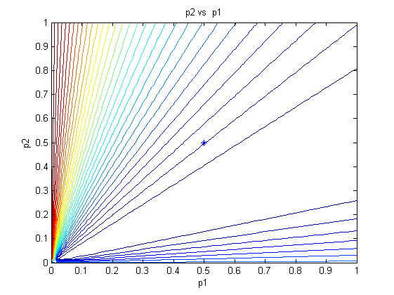 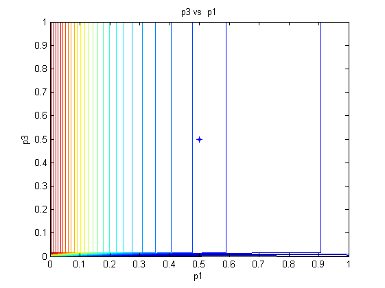  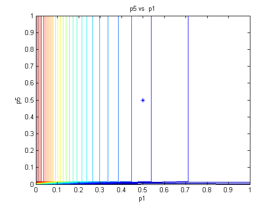 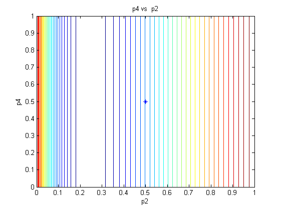 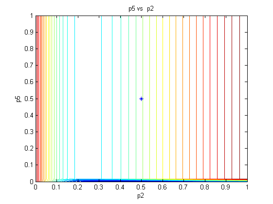 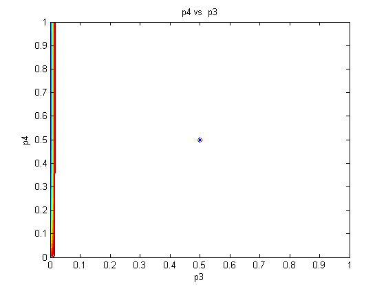
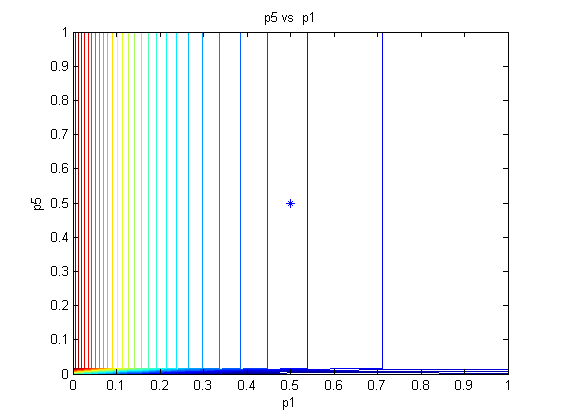 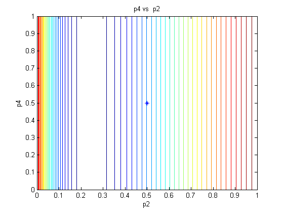 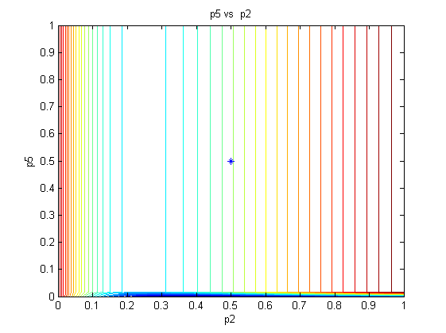 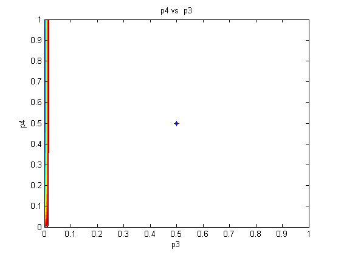  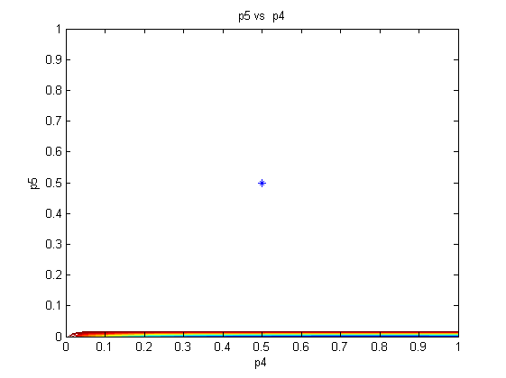
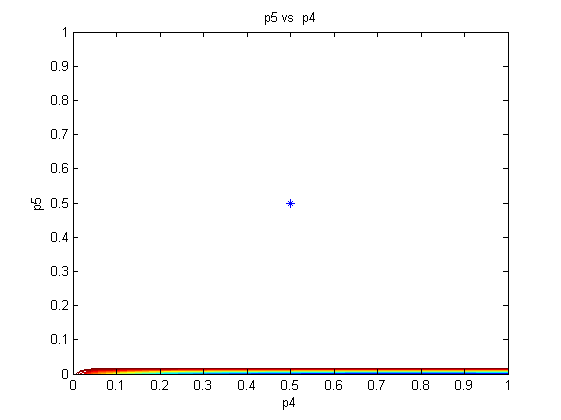 AMIGO_htmldoc_inputs(inputs,fullfile(pwd,'html','contourex1.html'));